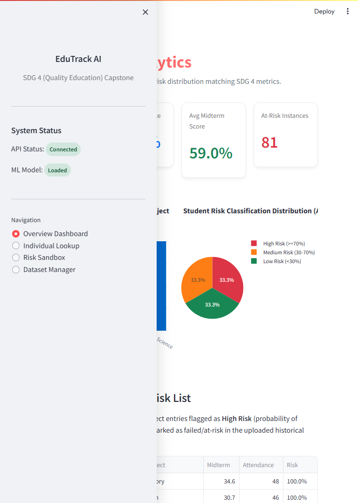
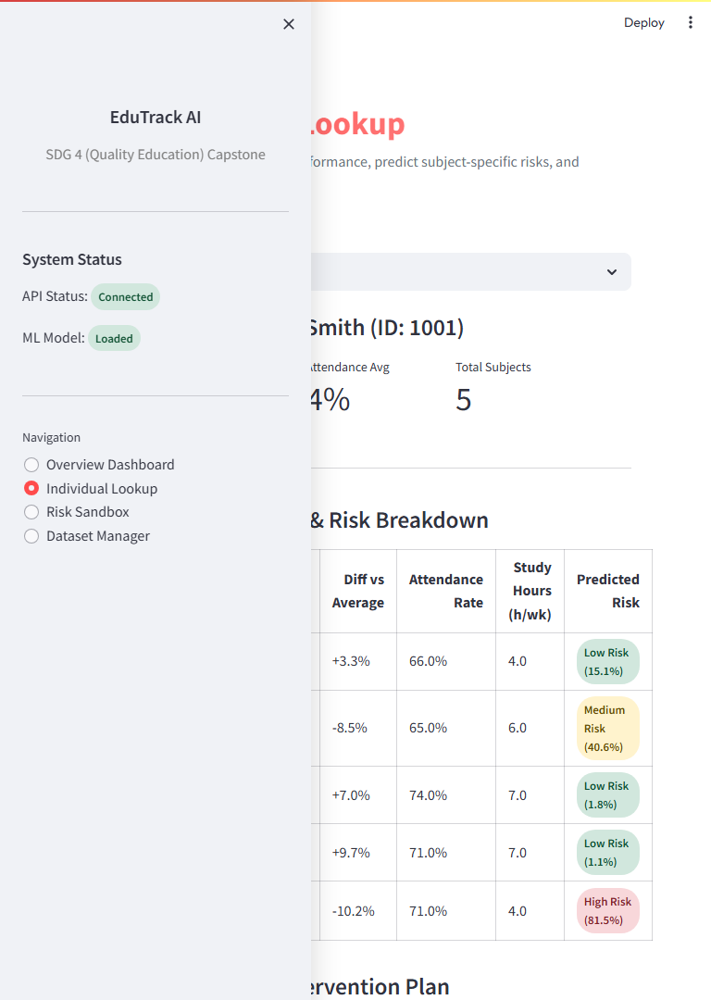
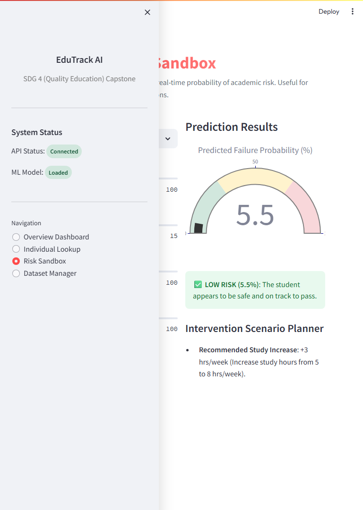
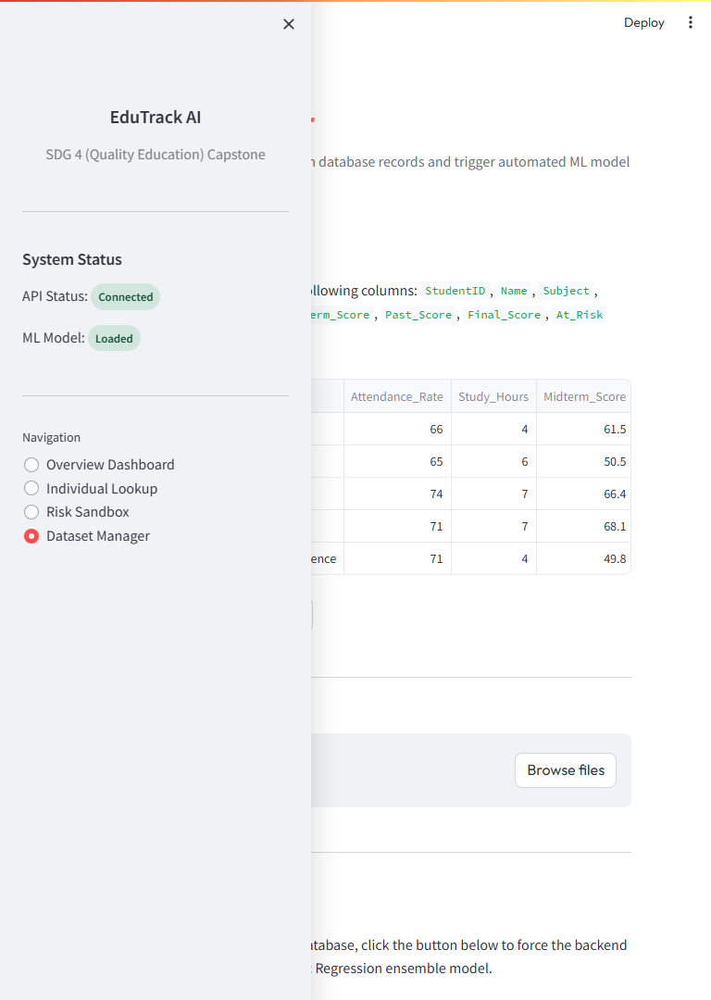

1. Selected SDG and Reason for Selection
Goal 4 – Quality Education: Ensure inclusive and equitable quality education and promote lifelong learning opportunities for all.
Reason for Selection: Education is the foundation of sustainable development. However, many educational systems rely on "lagging indicators" (final grades) to identify struggling students. By the time a student fails a final exam, it is often too late for effective intervention. This issue is particularly severe in overcrowded classrooms or under-resourced schools where individual performance tracking is manual and slow. I selected SDG 4 because AI can bridge this gap by providing Early Warning Systems that identify at-risk students during the term, allowing for timely, data-driven support.
2. Problem Statement
- What is the problem?: Lack of automated, real-time tracking for student academic risk, leading to high failure rates that could have been prevented with early intervention.
- Where does this problem exist?: In schools and universities where large student-to-teacher ratios make it impossible for educators to manually analyze performance trends for every student across multiple subjects.
- Who is affected?: Primarily students at risk of academic failure, but also teachers who lack actionable insights and administrators who cannot effectively allocate support resources.
- Why is it serious?: Academic failure leads to increased dropout rates, loss of motivation, and long-term socio-economic disadvantages, hindering the progress of SDG 4.
- What happens if it is not solved?: Educational inequality will widen as students without private tutoring or individual attention continue to fall through the cracks of a reactive system.
3. Proposed Solution
EduTrack AI is a full-stack AI platform designed to predict academic risk and automate intervention planning. It uses a Machine Learning soft-voting ensemble (Random Forest + Logistic Regression) to analyze mid-term performance data and predict the probability of failure.
- How it works: The system ingests data like attendance rates, study hours, and mid-term marks. It processes these through a trained classifier that flags students as "High", "Medium", or "Low" risk.
- Intervention: It identifies the "Weakest Subject" for each student and uses rule-based logic to recommend a specific increase in weekly study hours (e.g., +5 hours/week) to mitigate the risk.
- Impact: By converting raw data into "Actionable Insights", it shifts the educational approach from reactive (fixing failures) to proactive (preventing them).
- Users: Teachers (for classroom monitoring), School Administrators (for resource allocation), and Students/Parents (for personalized study plans).
4. Project Features
Overview Dashboard
Real-time visualization of class-wide metrics (Avg Attendance, Pass Rates) using interactive Plotly charts and KPI cards.
Individual Student Lookup
A detailed profile search that breaks down a student's risk probability per subject and compares their scores to class averages.
Risk Prediction Sandbox
A simulator where teachers can input hypothetical parameters (e.g., "What if this student increases study hours to 10?") to see the predicted change in risk.
Automated Intervention Plans
Logic-driven recommendations that pinpoint the weakest subject and prescribe a personalized study hour adjustment.
Report Generation
One-click export of student performance records and intervention plans into formatted PDF and CSV files for distribution.
5. Technology Stack
Python (Core)
FastAPI (Backend)
Streamlit (Frontend)
Scikit-Learn (ML)
SQLite (Database)
Pandas / NumPy
Plotly (Visualization)
FPDF2 (PDF Export)
6. Project Screenshots (Proof of Work)

Figure 1: Main Overview Dashboard showing class-wide risk distribution and academic KPIs.
 Figure 2: Individual Student Performance Lookup and risk probability breakdown.
Figure 2: Individual Student Performance Lookup and risk probability breakdown.

Figure 3: Automated Academic Intervention Plan with personalized study hour recommendations.

Figure 4: Risk Prediction Sandbox providing real-time probability gauging for hypothetical scenarios.

Figure 5: Dataset Manager for uploading CSV data and triggering automated ML model retraining.
7. Open Source Repository
8. Future Scope
- Generative AI Integration: Integrate a LLM-based tutor (e.g., Google Gemini) to provide immediate tutoring on the student's weakest subject directly within the app.
- Mobile Companion App: Develop a mobile version for parents to receive push notifications if their child's risk probability crosses a certain threshold.
- LMS Connector: Build API hooks for Google Classroom and Moodle to automatically sync grades and attendance data in real-time.
- Advanced Modeling: Incorporate socio-economic and behavioral factors into the ML model for a more holistic prediction of student success.